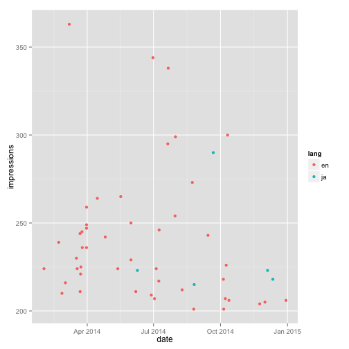
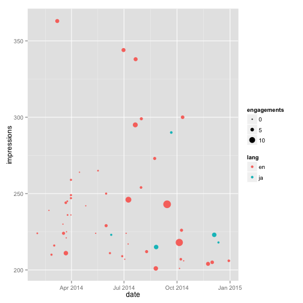
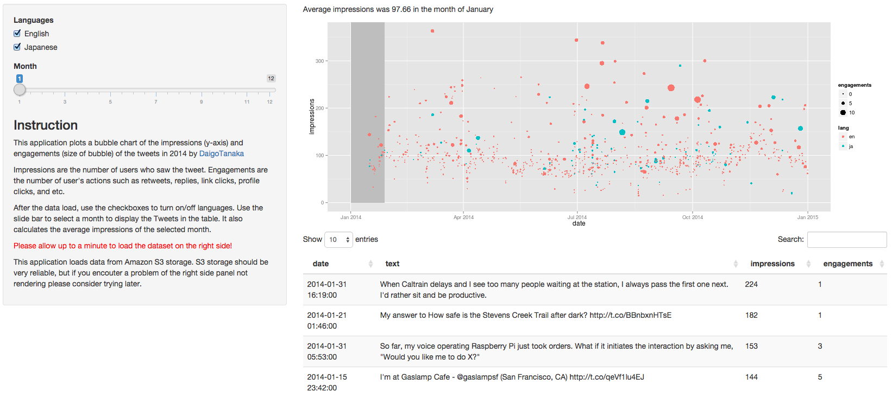

Motivation
- Building reputations for the profession is important to me.
- For online presence, Twitter is one of the great channels.
- I want to learn the characteristics of influential Tweets!
Daigo Tanaka (@DaigoTanaka)
Tech Lead at FiveStars
Let's visualize taking date and impressions as X and Y axes, respectively. (I also colored English and Japanese tweets differntly)

We can visualize as the size of the point.
This is called bubble chart.

